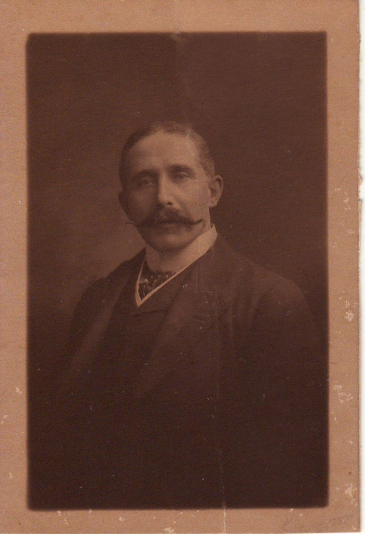
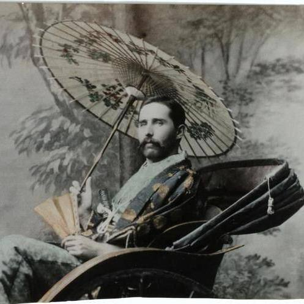
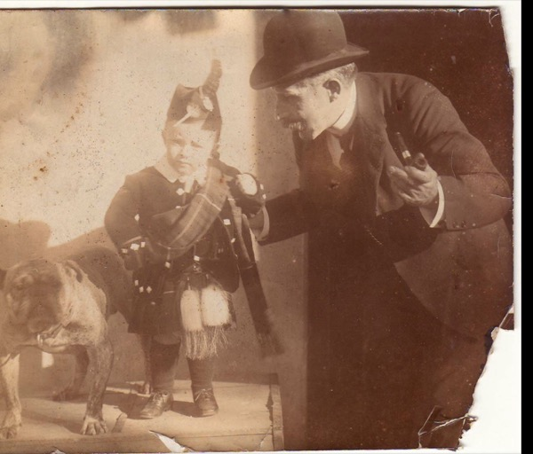
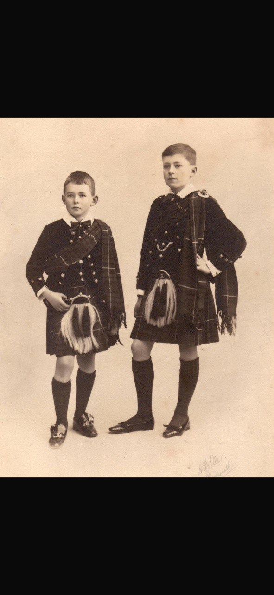

A biography by his son Colin Grant Clark, written Brisbane, August 1978.


James Clark in Japan, 1890. The police required him to travel in Japanese costume, in order not to look too conspicuous.

James and Colin, Plymouth, c. 1907.

Colin and Kenneth Clark, in kilts.
James Clark was born on the 18th April 1857, in the clachan (hamlet) of Auchindoir, Aberdeenshire. No trace of Auchindoir now remains. It was in a remote part of the shire, near to Banffshire. As a child he could see on the skyline the remote and dangerous Cairn Gorm mountains, and wondered if anyone would ever take him to climb them. The nearest town was Lumsden. Also close by, where he and his friends used to play, were the ruins of Kildrummy Castle, a distant outpost to which Bruce sent his wife for safety during the English wars. Not much now remains of the ruins, but they contain a very fine Decorated Style chapel window. Fourteenth century Scotland was not so primitive as is sometimes supposed.
His father was a farmer and timber contractor on a fairly large scale, but was brought into considerable difficulties by a prolonged and costly lawsuit. James Clark was about the youngest of his family, presumably born late in life to my grandfather who must also have been the youngest son of his family. Otherwise there can be no explanation of the astonishing fact that two of my great-uncles served in the Peninsular War and fought in the appalling siege of Badajoz in 1812, after which the British Army disgraced itself. The family had vivid recollections of a famine in 1811, when they had to resort to the ancient practice of bleeding the cattle for food.
Of the family possessions there also remains (kept by Bernard Clark) a long manuscript dated 1804, simply and very clearly written, on the principles of accounting, as understood at that time. A professor of accounting to whom it was submitted said that he thought that it might represent the notes of someone engaged in teaching the subject.
Of the remoter ancestry of the family little is known. There is a tradition that our ancestors fought at Culloden with Prince Charles's army in 1746. One known ancestor was Cluny MacPherson, who was adjudged by an 18th Century nobleman the winner in all Scotland of a prize for manly beauty.
"Here's bonny braw health to the muckle black De'il That's danced awa' with the Exciseman"
and there are other references in Scottish folk songs to resentment against the excise on whisky, which was indeed an unjust tax on one of the few recreations of a poor country with a cold climate. Illicit distilling enjoyed full popular support. James Clark told me that in his young days, in the 1860's and 1870's, the remoter glens on Speyside were full of illicit stills. But as late as 1920 he still kept among his possessions the spiral copper tube ("worm") which is a necessary part of a still, possession of which, he remarked to me, was illegal. I do not know what happened to it eventually, but I have a strong feeling that our ancestors had some connection with unexcised distilling.
Upbringing was harsh, with "the buckle end of a strap". James Clark's mother was Margaret Cruickshank, one of the not inconsiderable number of Scottish people of those days who had seen the fairies. He had a brother William who was close to him (may have been a twin), who also emigrated to Australia, and died young. The eldest of the family, Mary, married Dr. MacDonald of Invermossat, Aberdeenshire. She was the only other survivor and lived to the 1920's. He had an old grandmother (I am not sure on which side) who spoke to him only in Gaelic, and could not speak English. At the Presbyterian Church, where attendance was strict, the congregation sat through a long sermon delivered twice, once in English and once in Gaelic. Some contemporary stories indicate that Scottish congregations took a keen interest in the finer points of theology, and listened closely and critically to sermons.
There are some interesting childhood recollections. A golloch (large black beetle) ran across the road in front of an old woman smoking her pipe at her cottage door. She told him that he must kill it, because it was a black beetle who betrayed Christ to his captors in the Garden of Gethsemane.
The hay was still mown by hand. Once when I was scything he reminded me that he remembered the mowers standing their whetstones in jugs of water.
But hand-threshing with flails was giving place to steam-driven threshers, which travelled slowly, under their own steam power, from farm to farm. Indeed these lasted until the appearance of combine harvesters in the 1920's. But when the first steam thresher appeared in this part of Aberdeenshire the boys were fascinated by it, and followed it wherever it went.
The Franco-Prussian war of 1870 caused a great stir. It appears that Scotland was very pro-German, perhaps on religious grounds. Travelling salesmen went round selling coloured handkerchiefs printed with portraits of successful Prussian generals.
One boyhood friend bore the extraordinary names of Terence Tiranus McGuire Mearns. He belonged to a small Catholic minority living in that part of Aberdeenshire, with the nearest priest a great distance away. When the child was born, in winter, the father set out to cross the mountains to have the child baptised. But bad weather set in, and so he made use of the emergency provisions, as he was entitled to do, and baptised the child himself.
A close friend was James Meston, who went to Aberdeen University and then to Cambridge, achieving high distinction in the Mathematics Tripos, then winning a place in the Indian Civil Service (in those days much more sought after than the Home Civil Service). James Clark went to visit him in Cambridge (presumably before he sailed to Australia in 1878) and they went to drink whisky in the Bull Hotel (an old building now incorporated into King's College). But Meston had to keep a sharp look-out to make sure that there were no proctors around. Meston rose in the service and about 1915 was appointed Provincial Governor of the United Provinces of Agna and Oudh (now Ultar Pradesh), a very high rank in those days. Long afterwards I found his name still remembered in India as a just and capable administrator. He retired in 1921, and became a director of numerous companies. When James Clark died in 1927 he helped the family with a generous loan. In 1929 he offered Kenneth a post in the Calcutta Electric Supply Company at £500 a year, a very high salary for a young man in those days.
At the age of 16 James Clark started work in the Glasgow textile exporting firm of Scott Dawson and Stewart. His father had to pay a premium of £100 – a large sum for the 1870's – to secure him such employment. He lodged in Govan. He attended evening classes in French – which was then very much the international language – given by M. Chardenal, who claimed that his textbooks were used in Oxford and Cambridge.
At the time it seemed quite probable that Britain would become involved in the Russo-Turkish war of 1876-77 (on the Turkish side). In the words of the vulgar music-hall song of the time –
"We don't want to fight, but by Jingo! if we do we've got the ships, we've got the men, we've got the money too – The Russians shall not have Constantinople!"
A call was sent out for volunteers to undergo part-time training to reinforce the British Army, and James Clark was one of the recruits. Their officers told them that they would probably have to fight in the Russian Arctic, and they made up a song about it. They found sleeping in the open in a Scottish April quite cold enough.
With or without Army volunteer service, James Clark must have worked remarkably well, because at the age of 21 he was selected to open a branch in Townsville, at the unheard-of salary of £600. Situated in tropical Queensland, Townsville is now a large and prosperous city, but was very much the end of the world in 1878. The firm decided to start a branch there because a (temporarily) highly productive gold field had been discovered in 1877 at Charters Towers, some 60 miles inland, all of whose traffic went through Townsville seaport.
Townsville got its unusual name from Robert Towns, a prosperous Sydney merchant, who was engaged in "blackbirding". Cotton and sugarcane cultivation had recently begun in Queensland, and it was taken for granted that white men could not do heavy field work in the tropics (in fact they enjoy very good health in so working, if they are careful about hygiene, and keep off the spirits). But in the 1870's the cultivators relied on "blackbirding", which was a thinly-disguised form of slave-raiding. The "blackbirding" ships used to visit Polynesian and Melanesian islands, pay bribes to the chiefs, then take away large numbers of men, who were put through the formality of signing indentures, which they did not understand, and then taken away to work in Queensland. James Clark remembers seeing them land – "savages with fishbones through their noses" and despised the efforts of missionaries who endeavoured to speak to them (likewise the missionaries who preached to the Australian aborigines). He had looked on orthodox Scottish Calvinism with some amusement, including the rhymed versions of the Old Testament sometimes in use:
"And Jacob made for his wee Josie A tartan coat to keep him cosy And whit for no? It was nae harm To keep the lad baith saff and warm."
For many, Scottish Calvinism could not stand up to the attacks of Burns (particularly in his creating the character "Holy Willie"). James Clark regarded Burns as the greatest poet and prophet of all time. One can see now how much Burns's humane, relaxed, sceptical, equalitarian poetry helped to form the present outlook of Australia, which received so many Scottish migrants.
James Clark had a truly Scottish dislike of Catholicism. (He firmly believed the extraordinary legend of "Pope Joan"). But he believed in what he called "the broad principles of the Christian religion", and thought that they ought to be taught in all schools. But it was only very rarely that he was persuaded to accompany his family to Church of England services.
The system of "indentured" labour in Queensland was brought to an end in 1906, when all the islanders were repatriated, except to a small minority who preferred to stay.
There was a British naval base at Bowen in North Queensland - the possibility of war with the Russian Fleet based in Vladivostok led to an all-round strengthening of Pacific defences - but Captain Towns had good reason to keep away from it, as his activities were already highly suspect. So he developed his own much inferior harbour, to which he gave his own name (a large artificial harbour has since been constructed). It remained a very small port until the Charters Towers gold rush. Scott Dawson and Stewart, while primarily a textile firm, also imported many other kinds of merchandise. Delivery was of course very slow, but it was possible to order by cable, since the completion in 1872 of a telegraph line across Central Australia linking to the rest of the world through Darwin and Java. But the messages had to go a long way round, and be many times repeated by telegraphists. There were no electrical repeaters in those days, and the telegraphist had to read the flickering light from a mirror galvanometer.
Orders were telegraphed in code, and the displacement of a single letter could have costly consequences. You could have your message repeated, but had to pay twice, unless an error was discovered.
Life in the tropics before refrigeration had been discovered is almost beyond our imagination. Butter was imported from New Zealand in casks, but it arrived as a rancid oil, and he developed a lifelong aversion to butter from these days. Cattle had to be slaughtered for their hides and tallow only, and most of the meat thrown away. Some of it was fed to horses - believe it or not. But refrigerated transport of meat on long sea voyages was being pioneered to that time, and during the 1880's James Clark played a large part in starting Queensland Meat Export Company in Townsville. He seems to have had several business ventures at that time, and to have already amassed a fortune, which was much diminished in 1889 through one of the partners having speculated unsuccessfully with the firm's funds.
He left a number of papers on life in Townsville in the 1880's which are now with Dr Claire Clark (wife of Nicholas Clark, 6 Scarborough Street, Redhill, Canberra). She herself comes from Townsville and is a professional historian. They recount long journeys on horseback, crossing flooded rivers, dangers from crocodiles, and also from aborigines, who in this region were much more militant than in the rest of Australia.
At some time during the 1880's he returned to Scotland to see his family. The journey took him across the United States, which he found very interesting. He attended one of the well-known "Moody and Sankey" religious revival and hymn-singing meetings.
In 1890, with the agreement of his partners, he went on a purchasing expedition to Japan, being one of the first foreign merchants to do so (he always remembered the intense luminescence of the Banda Sea at night, as the ship approached the Equator). The police required him to travel in Japanese costume, in order not to look too conspicuous. He made large purchases of textiles and "fancy goods", on which the firm made a satisfactory profit.
He travelled extensively in Japan, including a journey to the far North, where he saw some of the Ainu, primitive tribesmen who had lived there before the Japanese, white-skinned and hairy. On either the outward or return journey he visited Canton, perhaps with some idea of doing business. What struck him most was the stifling control of all business by trade guilds.
Soon afterwards he moved to Brisbane, and built a large wooden house which he called Dunsinane, which remained standing until 1946. It had a magnificent billiard room, an aviary, and a large garden in which he grew pineapples. He shared it with other bachelors, including Bousfield, headmaster of the Grammar School, and Beirne, who became a large department store proprietor.
In 1893 he lost a lot of stock in the great Brisbane River flood, and worked in the rescue teams. He escaped the effects of the banking collapse of the same year through having taken out an insurance on his bank account, and acquired fame through lending money to Tyson, the richest grazier in Queensland, who was out of funds at the time. When I came to live in Brisbane in 1938 I found several of the older businessmen who remembered him. "His word was his bond" said one. He was one of the first to instal electric light in his business premises.
On the voyage between Australia and South Africa the Great Circle takes ships fairly far South. But he was one of the few people who have ever seen the Antarctic islands of Kerguelen, Amsterdam and St. Paul's. In those days before radio one ship each year was required to deviate to these islands in case there might be any castaway sailors on them: stores of food had been left for this possibility. His move to South Africa was apparently as a selling agent for Queensland Meat Export, among other things. The Queensland Club stood him a farewell dinner of some 12 courses, customary in those days. Apparently through his friendship with General Owen, who had commanded the Queensland Militia in the 1890's, he got an introduction to General Kitchener (whose name he gave to his second son) and probably some Army contacts. He was a friend of (and was sometimes mistaken for) Dr Jameson, of the famous Jameson Raid into Boer territory. In 1899 James Clark was on the last train to get out of Johannesburg (I do not know what he was doing there) before the Boer war began.
He had a low opinion of General Buller, the commander under whom the Boer War opened so disastrously, recording that he was drinking heavily, and the crowning piece of South African gossip, that he had a portable commode (but this was understandable in the days when it was still believed that dysentery was spread by contagion, rather than by contaminated food and water).
It is true that in the later stages of the Boer War the British Army disgraced itself by burning down farm houses and herding civilians into concentration camps. But the Boers were not blameless. In 1899 his friend Dr Moolman, a veterinary scientist, had his home and all his scientific instruments and records destroyed by a raiding Boer commando.
By this time he had amassed a substantial fortune in South African and Australian securities and was leading a life of comparative leisure.
In April 1904, now aged 47, at a ship-board party for departing travellers, he met Marion Nelly Jolly, who had come to South Africa with an LRAM qualification as a music teacher. Attachment was immediate, and he wrote her a love poem (several poems survived in his writings). Shortly before they were married she received an invitation to tour with a professional concert party, but her husband-to-be, with firm Edwardian notions of propriety, forbade it. They were married in October 1904 at her father's home at Water Orton, then a village, now a suburb of Birmingham. Then (it appears) he was absent in Australia when I was born in Westminster in November 1905, then the family returned to South Africa where Kenneth was born in September 1907. Apparently there was a suggestion of living in Brisbane, which Marion Clark rejected. In Brisbane the family fortunes might have been very different.
On marriage she had been endowed with a large "settlement" and much jewellery. These all had to go. 1907 was a year of world-wide stock exchange collapse, and the South African mining and Australian industrial shares in which most of his fortune was invested fell more heavily than the rest. His notebook tells a sad story.
The family went to England in 1908 or 1909 and lived modestly, first in the London suburb of Bromley (I can remember a Christmas there), then in Folkestone. During this period he was engaged on various business ventures, including the promotion of patents taken out by his old friend Solomon Adolphus Marks (he generally got on well in Jewish company) for an ingenious new type of hatpin (remember the size of the hats women used to wear in those days?) – but it came to nothing.
He made another voyage to Australia to see to various business matters. The ship on which he returned called at Plymouth, where Marion Clark went to meet him, and they decided that they liked the neighbourhood (maybe he found that it bore a little more resemblance to Queensland than did the rest of England). After a short period in lodgings, early in 1910 he took the lease of Glen View in Mannamead where Margaret was born in 1911, and Malcolm in 1913, and where the family remained until 1918.
The great issues in politics at this time were the powers of the House of Lords, and Irish Home Rule. He had a great opinion of his fellow-Glaswegian Bonar Law, who had recently succeeded to the leadership of the Conservative Party, and whose speeches on Ireland came close to advocacy of Civil war. In 1913, trying to understand what it was all about, I asked my father what the King was doing about the Irish dispute. "He may lose his Throne over it", was the stern reply. (In fact as we now know, George V was making a statesmanlike effort to mediate). He was most displeased with developments in Australia, with Federal (1908) and Queensland (1915) Labour Governments; and the high wages paid. "These people want to make Australia a Paradise for people of their own class".
James Clark had purchased a jam and confectionery business known as Devonshire Products and Supplies, largely employing unskilled female labour, at the low wages of those days. Buying fruit, particularly apples for pectin, gave him reason for long walks to call on farmers nearby, which he much enjoyed. With the outbreak of war in 1914 there was a great shortage of sugar (before 1914 Britain used to import large amounts of continental beet sugar) and the confectionery business came to an end. The jam business however did well, with large naval contracts. In those days sailors on the larger warships, and in barracks, formed their own messes and made their own purchases, and his jam was undoubtedly very good, even though the jars were inappropriately labelled with quotations from Burns.
He never forgot that he was a Scotsman, not only drinking Scotch whisky and having a copy of "The Scotsman" posted to him each week from Edinburgh, but also making his sons wear kilts on most inappropriate occasions. He greatly enjoyed hearing Marion with her beautiful voice sing Scottish songs, 'Coming through the Rye', 'O gin I were were the Gardie rins', and that most passionate of love songs, 'Bonnie Mary of Argyll'.
In 1915, when the going was good, he leased a second home, for weekends and holidays, at Newton Ferrers, then only accessible by river steamer from the Yealmpton railway. This became the family's sole home after the end of 1918. He did not renew the lease of the Plymouth house after it had been damaged in a fire lit by two boys to cover up their thefts from it (their parents were implicated, but escaped conviction through the skilful advocacy of the Liberal-politician-lawyer Isaac Foot, father of Michael Foot, Dingle Foot etc. Once I was debating in the Oxford Union against Michael Foot, and brought the house down by saying that my first acquaintance with the Foot family was when my father's house was burgled.)
While the 1914-18 war brought naval contracts, it also brought greatly increased taxation, and his Australian dividends had to pay double tax, in those days before international tax treaties. Even before the Armistice of November 1918 naval contracts were being cut back heavily. Meanwhile wages had been greatly increased by Trade Board orders, and the excellent jam produced could not compete, to an undiscriminating public, with the cheaper and coarser jams produced elsewhere, and the business slowly closed down.
At the beginning of 1920 his love of horticulture led him to the mistaken step of leasing a house, glass-houses and 10 acres of garden from Lord Morley's Saltram estate, close to Plymouth. It certainly made a beautiful home. But the gardens, which had been designed for more spacious times of aristocratic abundance, had been badly neglected during the war, and would have required a great deal of labour to resuscitate them. Even then they could not possibly have made a profit in competition with commercial horticulture. In 1926 he had to surrender his lease, and the family moved to Dunsford, near Exeter, with practically no resources.
Having up till then enjoyed reasonably good health (though continually complaining about England's cold wet climate) in July 1927 he had a bad attack of sepsis of the gums, and had to have all his teeth extracted. The dentist could not give him anaesthetic because of his age and the state of his heart. But the shock was too much for him, and he died early in August. He is buried in Holcombe Burnell churchyard, near Exeter.
Colin Clark, Brisbane, Australia. August, 1978.
See also: Marion Nellie Clark (1880–1942).